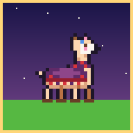

Select your music folder of choice to play local music.
Stations from .m3u / .m3u8 / .pls files are kept in this browser.

Fantasy Radio CompanionSelect your music folder of choice to play local music.
Select your music folder of choice to play local music.